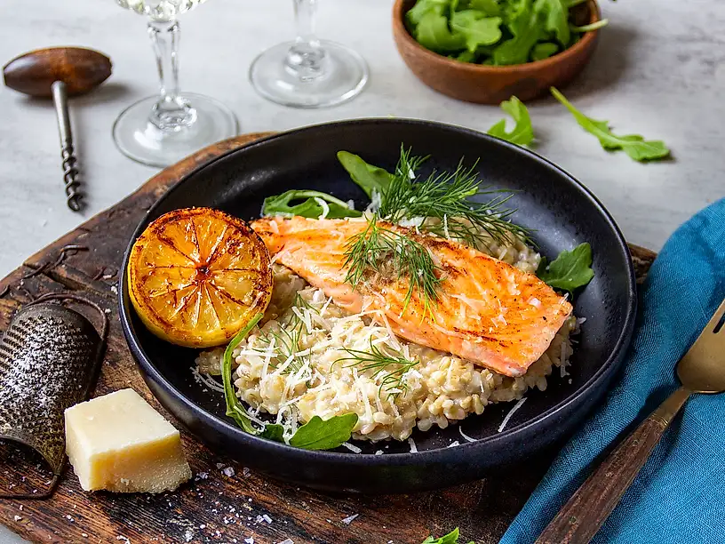

Gör så här:
Steg 1: Sätt ugnen på 225 grader.
Steg 2: Skär tomaterna i klyftor. Blanda med olivolja, balsamvinäger, salt och peppar. Bryt ner
basilikabladen, men spara några till garnering. Låt marineras ca 20 minuter.
Steg 3: Pensla brödet med olivolja och rosta i ugnen ca 5 min eller tills det fått fin färg. Skala och
halvera vitlöksklyftan och gnid mot det rostade brödet så det får lite smak.
Steg 4: Lägg upp tomaterna på brödet, lägg på en burrata, prosciutto och garnera med några extra
basilikablad.
___________________________________________________________________________________________________________

Havrerisotto:
- 2 schalottenlökar
- 1 klyfta vitlök
- neutral olja, till stekning
- 4 dl Frebaco Kvarn Svenskt Havreris
- 2 dl vitt vin (torrt)
- 1,5 msk koncentrerad grönsaksfond
- 5 dl vatten
- 3 dl parmesanost, finriven
- salt
- Peppar
Citronstekt lax
- 4 laxfiléer
- 2 msk smör
- 2 citroner
Citronstekt lax med krämigt havreris
Gör såhär:
Havrerisotto
1. Koka havreriset i vatten 4 minuter kortare än anvisningen på förpackningen. Skölj det sedan direkt i
kallt vatten.
2. Skala och hacka schalottenlök och vitlök. Svetta i en stor kastrull eller gryta tillsammans med lite
olja. Tillsätt vin och havreris. Låt vätskan koka bort.
3. Koka upp vatten och grönsaksfond i en separat kastrull. Tillsätt lite i taget i havreriset under
omrörning tills du fått önskad konsistens på havrerisotton.
Riv parmesanosten fint och rör ner i den varma risotton. Smaka av med salt och peppar.
Citronstekt lax
1. Dela citronerna på hälften och lägg i en het panna tills de börjar få färg. Klicka i smöret och stek
laxfiléerna på hög värme. Ös laxen med smöret tills den är lagom stekt, det tar ca 3 minuter.
2. Servera laxen på en bädd av havrerisotton. Pressa över stekt citron och toppa ruccola, dill och
finriven parmesan.